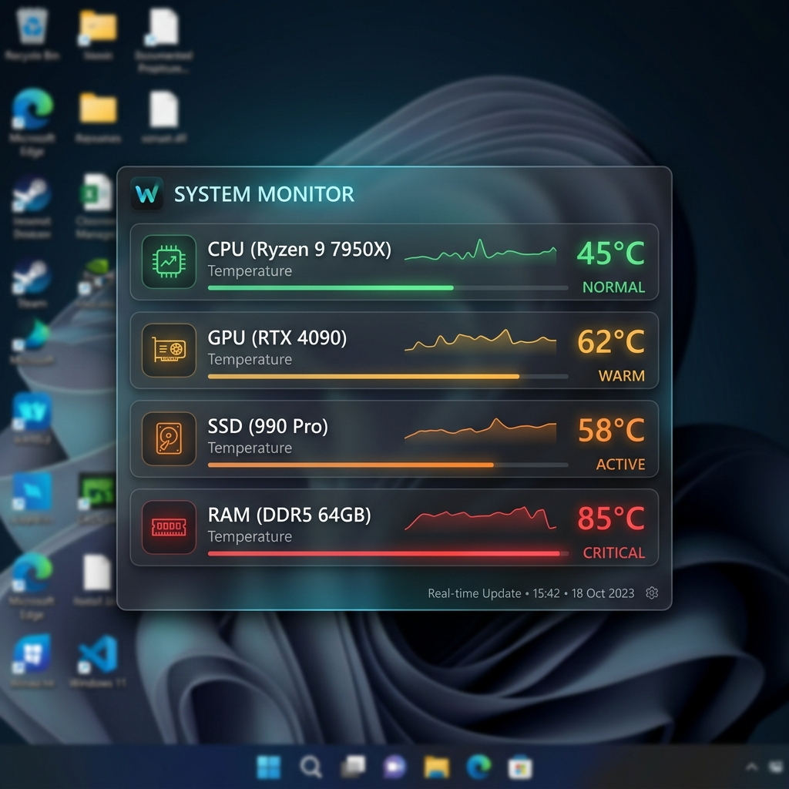

ภาพรวมโปรแกรม
Temp Monitor เป็นโปรแกรมขนาดเล็ก (Utility App) สำหรับผู้ใช้งาน Windows ที่ต้องการเฝ้าระวังอุณหภูมิการทำงานของอุปกรณ์ในเครื่อง เช่น CPU, GPU, SSD, RAM, VRM, และ Chipset ในขณะเล่นเกมหรือทำงานหนัก ตัวโปรแกรมจะแสดงผลลอยเหนือหน้าต่างอื่นๆ (Always on Top) ตลอดเวลา ด้วยดีไซน์สไตล์กระจกฝ้าโปร่งแสง
โดดเด่นด้วยฟังก์ชันคลิกทะลุผ่าน (Click-through) ทำให้ไม่รบกวนการทำงานของเมาส์ และควบคุมความโปร่งแสง ล็อกตำแหน่ง เลือกสีตัวอักษร รวมถึงปิดโปรแกรมได้ง่ายๆ ผ่าน System Tray เมนูบริเวณมุมขวาล่างของจอ
ดาวน์โหลดตัวโปรแกรม
ดาวน์โหลดไฟล์ติดตั้งพร้อมใช้งาน (Release Setup) สำหรับระบบปฏิบัติการ Windows
ดาวน์โหลด Temp Monitor
ฟีเจอร์เด่นของโปรแกรม
ดีไซน์ลอยตัวโปร่งแสง
ดีไซน์หน้าต่างแบบไร้ขอบ (WindowStyle: None) พื้นหลังเบลอสไตล์กระจกฝ้าหรูหรา และมีเงาขอบตัวอักษรเพื่อให้อ่านข้อมูลได้ชัดเจนบนทุกภาพพื้นหลังของเดสก์ท็อป
รองรับการคลิกทะลุ
ใช้ Win32 API ข้ามสไตล์หน้าต่างเป็น `WS_EX_TRANSPARENT` ทำให้ไม่ว่าคุณจะคลิกเมาส์บริเวณใดของวิดเจ็ต เมาส์จะคลิกทะลุไปยังแอปด้านหลัง ไม่เกะกะการทำงาน
วิเคราะห์ฮาร์ดแวร์เชิงลึก
เชื่อมต่อไดรเวอร์ระดับ Kernel ด้วย `LibreHardwareMonitorLib` อ่านค่าอุณหภูมิเซนเซอร์แม่นยำ ได้แก่ CPU Package/Core, GPU, NVMe SSD, RAM Load, VRM, และ Chipset
สีอุณหภูมิบอกสถานะ
ระบบจะเปลี่ยนสีตัวเลขตามระดับอุณหภูมิโดยอัตโนมัติ: เย็น (สีเขียว < 50°C), อุ่น (สีส้ม 50°C - 75°C), และร้อนมาก (สีแดง > 75°C) ช่วยให้สังเกตง่าย
บันทึกและจำตำแหน่ง
เมื่อเปิดล็อกและลากหน้าต่างโปรแกรมไปยังตำแหน่งที่เหมาะสม ตัวโปรแกรมจะเซฟตำแหน่ง ล่าสุดและค่าความโปร่งแสงเก็บไว้ในไฟล์ `settings.json` เพื่อใช้ต่อในการเปิดเครื่องครั้งถัดไป
System Tray & Auto-Start
ควบคุมทั้งหมดได้จาก System Tray (มุมขวาล่างของจอ) พร้อมมีสคริปต์ลงทะเบียนเข้าสู่ Startup Folder ของระบบ เพื่อให้ตัวตรวจวัดอุณหภูมิเริ่มทำงานพร้อมเปิดคอมพิวเตอร์
สถาปัตยกรรมและการเชื่อมต่อ Windows (Win32 API)
เพื่อให้โปรแกรม WPF สามารถทำงานในลักษณะโปร่งใส ลอยตัว และคลิกทะลุได้ โปรแกรมมีการเรียกใช้งานฟังก์ชันดั้งเดิมของระบบปฏิบัติการ Windows ผ่านกระบวนการ P/Invoke ด้วย API ต่อไปนี้:
WS_EX_TRANSPARENT (0x20)
สไตล์การทำงานหน้าต่างระดับสูงที่บอกระบบ Windows ว่า วิดเจ็ตนี้มีสถานะโปร่งใสต่อเมาส์ ทำให้ทุกๆ พิกเซลในพื้นที่ของหน้าต่างไม่รับอีเวนต์คลิกของเมาส์ และจะส่งต่อน้ำหนักการคลิกไปยังหน้าต่างเบื้องหลังทันที
WS_EX_TOOLWINDOW (0x80)
การระบุประเภทหน้าต่างเป็นเครื่องมือ ช่วยลบหน้าต่างนี้ออกจากแถบงาน (Taskbar) และหน้าสลับแอปพลิเคชัน (Alt+Tab) เพื่อป้องกันการกดสลับสมาธิมายังหน้าวิดเจ็ตในขณะกำลังเล่นเกมหรือทำงานอื่นอยู่
คู่มือการคอมไพล์และติดตั้งระบบ (Installation Guide)
เนื่องจากโปรแกรมต้องเข้าถึงฮาร์ดแวร์เพื่ออ่านค่าเซนเซอร์ จึงจำเป็นต้องเรียกใช้ด้วยสิทธิ์ผู้ดูแลระบบ (Run as Administrator)
1) ความต้องการของระบบ (Prerequisites)
- ระบบปฏิบัติการ Windows 10 หรือ Windows 11 (64-bit)
- ติดตั้ง .NET 9.0 SDK หรือติดตั้งผ่าน Visual Studio Installer
2) ขั้นตอนการคอมไพล์ผ่าน dotnet CLI
เปิด PowerShell หรือ Command Prompt ในโฟลเดอร์โปรเจกต์ `Temp_Monitor` แล้วทำตามคำสั่งต่อไปนี้:
# 1. โหลดแพ็กเกจ Dependencies ทั้งหมด dotnet restore # 2. คอมไพล์โปรเจกต์แบบ Release Mode dotnet build -c Release
3) ติดตั้งโปรแกรมแบบเปิดพร้อมใช้งานทันที (Autostart Setup)
มีไฟล์อำนวยความสะดวกในโฟลเดอร์โปรเจกต์ที่คุณสามารถเลือกใช้งานได้:
-
รันผ่าน Powershell: คลิกขวาที่ไฟล์
install.ps1-> เลือก Run with PowerShell ระบบจะสร้างโฟลเดอร์ใน Program Files และลงทะเบียน Startup ให้อัตโนมัติ -
รันผ่าน Batch File: ดับเบิลคลิกที่ไฟล์
install.batเพื่อช่วยนำทางคำสั่ง -
รันผ่าน Jupyter Notebook: เปิดไฟล์
Setup_AutoInstall.ipynbเพื่อรันคำสั่งตรวจสอบสิทธิ์ ติดตั้ง และลงทะเบียนแบบเป็นขั้นตอนผ่านโค้ด Python
💡 การปิดโปรแกรมหรือปรับแต่งเพิ่มเติม
เนื่องจากวิดเจ็ตถูกออกแบบมาให้ไม่มีขอบหน้าต่างและคลิกทะลุได้ เพื่อไม่ให้เกะกะสายตา หากต้องการปรับค่าความสว่าง ปิดระบบล็อกหน้าต่างเพื่อย้ายที่ หรือสั่งปิดโปรแกรม ให้มองหาไอคอนโปรแกรม Temp Monitor บริเวณมุมขวาล่างของจอคอมพิวเตอร์ (System Tray Icon) คลิกขวาเพื่อเปิดเมนูคำสั่งได้ตามต้องการครับ